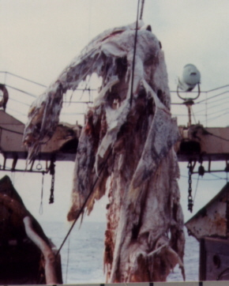
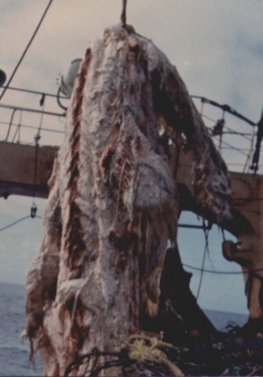
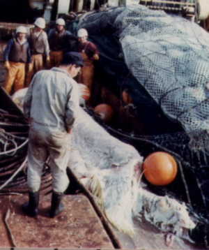
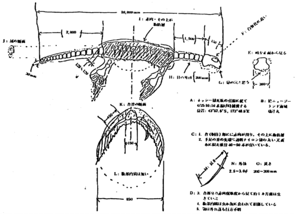
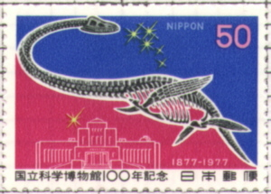
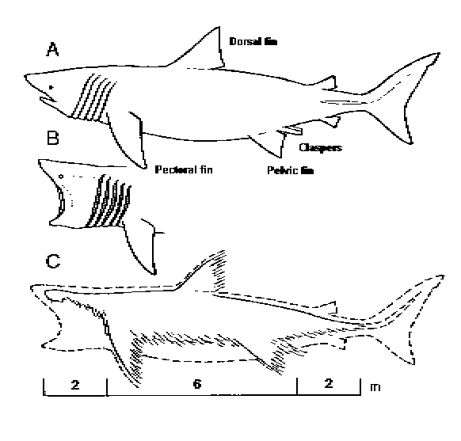
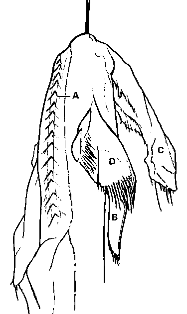

Seemonster oder Hai?
Eine Analyse eines angeblichen Plesiosaurier-Kadavers, der 1977 gefangen wurde
Copyright © 1997-1998 durch
Glen J. Kuban
[Dieser Artikel wird gespiegelt von http://paleo.cc/paluxy/plesios.htm.]

Ein verrottender Kadaver, der 1977 zufällig von einem japanischen Schleppnetz vor Neuseeland gefangen wurde, wurde häufig von Kreationisten und anderen als wahrscheinlicher Plesiosaurier oder prähistorisches „Meinwesen" bezeichnet. Plesiosaurier waren eine Gruppe von langhalsigen, räuberischen Meeressauriern mit vier paddelartigen Gliedmaßen, die vor etwa 65 Millionen Jahren mit den Dinosauriern ausgestorben sein sollen. Allerdings deuten mehrere Beweislinien, einschließlich Laborergebnisse von Gewebeproben, die vom Kadaver entnommen wurden, bevor dieser entsorgt wurde, stark darauf hin, dass es sich bei dem Exemplar um einen Hai handelt, und zwar höchstwahrscheinlich einen Baskenhai. Dies sollte nicht überraschend sein, da Baskenhaie bekanntlich zu „Pseudoplesiosaurier"-Formen zerfallen und ihre Kadaver in der Vergangenheit mehrfach für „Meinwesen" gehalten wurden. Leider erhielten die Ergebnisse wissenschaftlicher Studien zum Kadaver weniger mediale Aufmerksamkeit als die frühen sensationellen Berichte, was dazu führte, dass weit verbreitete Missverständnisse über diesen Fall weiterhin kursieren. Daher ist eine gründliche Überprüfung seiner Geschichte und der einschlägigen Beweise geboten.
Am 25. April 1977 trallte ein Fischereischiff namens Zuiyo-maru der Taiyo Fishery Company Ltd. etwa 30 Meilen östlich von Christchurch, Neuseeland, nach Thunfisch, als eine große Tierkadaver in seine Netze verwickelt wurde, in einer Tiefe von etwa 300 Metern (fast 1000 Fuß). Als das massive Lebewesen, das etwa 4000 Pfund wog, zum Schiff gezogen und dann über die Deckkante gehoben wurde, verkündete der stellvertretende Produktionsleiter Michihiko Yano dem Kapitän (Akira Tanaka): „Es ist ein verrotteter Wal!" Doch als Yano das Lebewesen genauer betrachtete, wurde er unsicher. Etwa 17 weitere Besatzungsmitglieder sahen ebenfalls die Kadaver, von denen einige spekulierten, es könnte ein riesiges Schildkröten mit abgezogenem Panzer sein. Doch niemand an Bord konnte mit Sicherheit sagen, was es war (Aldrich 1977; Koster 1977).




Abbildung 1. Vier der vom Michihiko Yano an Bord des Zuiyo-maru am 25. April 1977 aufgenommenen Fotografien. A, B. Zwei Vorderansichten des Kadavers. Diese waren die Fotos, die viele dazu veranlassten, den Kadaver als plesiosaurähnlich zu betrachten. C. Die einzige klare Fotografie der Rückseite des Kadavers, die eine scheinbare Rückenflosse und Myokommaten entlang des Rückgrats zeigt (siehe Abbildung 5). D. Der Kadaver auf dem Deck, mit dem vorderen Ende nach rechts. Eine fünfte Fotografie (nicht gezeigt) ist eine fast identische Ansicht des Kadavers auf dem Deck und liefert keine zusätzlichen Informationen.
Despite the possible scientific significance of the find, the captain and crew agreed that the foul-smelling corpse should be thrown overboard to avoid spoiling the fish catch. However, as the slimy carcass was being maneuvered over the ship in preparation for disposal, it slipped from its ropes and fell suddenly onto the deck. This allowed the 39 year old Yano, a graduate of Yamaguchi Oceanological high school, to examine the creature more closely. Although he was still unable to identify the animal, Yano felt it was definitely unusual, prompting him to take a set of measurements, along with five photographs using a camera borrowed from a shipmate. The total length of the carcass measured 10 meters (about 33 feet). Yano also removed 42 pieces of "horny fiber" from an anterior fin, in hopes of aiding future identification efforts. The creature was then released over the side and sank back into its watery grave. All of this took place within about an hour (Koster 1977). About two months later Yano made a sketch of the carcass, which unfortunately conflicts with some of his own measurements, photographs, and statements (discussed later).

Abbildung 2.
Abbildung 2. Skizze des Zuyiyo-maru-Kadavers, erstellt von Michihiko Yano zwei Monate nach der Untersuchung und dem Überbordwerfen des Kadavers. Die Skizze und Übersetzungen erschienen in den Collected Papers of the Carcass of an Unidentified Animal Trawled Off New Zealand by the Zuiyo-maru, 1978. Die Messungen der Hauptkörperteile sind in der Zeichnung schwer zu erkennen: Gesamtlänge: 10000 mm, Kopflänge: 450 mm, Halslänge: 1.500 mm.
Übersetzungen: A. Aufspüren einer Nessie-ähnlichen Kadaver. Am 25. April um 10:00 Uhr gesichert bei 43° 57,5′ S, 173° 48,5′ O [sic]. B. Im Meer vor Neuseeland; Zuiyo-maru. C. 1. Rote Muskeln, die auf dem Rücken des Rumpfes verbleiben und von Fettgewebe überlagert werden. 2. Es gibt 40–50 Stück transparenter, nylonartiger Knorpel mit rundem Querschnitt an den Spitzen und Gliedmaßen. D. 3. Gemessen am Zustand der Verwesung könnte das Tier bis etwa einen Monat vor der Sicherung noch am Leben gewesen sein. 4. Die inneren Organe im Bauchraum sind beschädigt, von Würmern oder Fischen gefressen. 5. Das Unterkiefer ist verloren gegangen. E. Vorderansicht des Kopfes (300 mm). F. Gut skelettiert. G. Wahrscheinlich Nasenlöcher [sic]. H. Durchmesser des [Wirbelknochens des Halses (200 mm)]. I. Rote Muskeln; Fettschichten darauf. J. Querschnitt des Schwanzes. K. Querschnitt des Rückgrats (150 mm). L. Keine inneren Organe im Bauchraum. M. Länge. N. Durchmesser [der hornigen Fasern?]. O. Länge [der Fasern] (200–300 mm).
Als Yano am 10. Juni 1977 mit einem anderen Schiff nach Japan zurückkehrte, ließ er umgehend seine Fotos in der Dunkelkammer des Fischereibetriebs entwickeln. Die Führungskräfte des Unternehmens waren von den Fotos fasziniert, einige zeigten tatsächlich ein ungewöhnliches Tier mit langem Hals und kleinem Kopf. Lokale Wissenschaftler wurden gebeten, die Fotos zu prüfen, und stellten fest, dass sie noch nichts Ähnliches gesehen hatten (Koster 1977). Manche spekulierten, es könnte sich um eine Art prähistorisches Lebewesen wie ein Plesiosaurier handeln.
Am 20. Juli 1977, als Aufregung und Spekulationen über die Fundstelle begannen sich auszubreiten, hielten Beamte der Fischerei-Firma eine Pressekonferenz ab, um ihre geheimnisvolle Entdeckung öffentlich bekannt zu geben. Obwohl die wissenschaftliche Analyse der Gewebeproben und anderer Daten noch nicht abgeschlossen war, legten die Unternehmensvertreter den Fokus auf das Thema Meeresungeheuer. Am selben Tag veröffentlichten mehrere japanische Zeitungen sensationelle Titelseitenberichte über den Fund, gefolgt bald von zahlreichen weiteren Berichten in Rundfunk und Fernsehen in ganz Japan (Sasaki 1978). Obwohl einige japanische Wissenschaftler vorsichtig blieben, förderten andere die Idee des Plesiosaurus. Professor Yoshinori Imaizumi, Direktor der Tierforschung am Nationalen Wissenschaftsmuseum Tokio, wurde im Asahi Shimbun zitiert mit den Worten: „Es ist kein Fisch, kein Wal oder irgendein anderes Säugetier... Es ist ein Reptil, und die Skizze sieht sehr ähnlich einem Plesiosaurus aus. Dies ist eine kostbare und wichtige Entdeckung für die Menschheit. Es scheint zu zeigen, dass diese Tiere doch nicht ausgestorben sind." (Koster 1977). Tokio Shikama vom Nationalen Universität Yokohama unterstützte ebenfalls das Motiv des Ungeheuers und erklärte: „Es muss ein Plesiosaurus sein. Diese Kreaturen müssen sich noch in den Gewässern vor Neuseeland aufhalten und Fische fressen." (Wire Service Reports, 7/25/77, berichtet in Aldrich 1977).
Inzwischen haben amerikanische und europäische Wissenschaftler, die über das Kadaver-Rätsel befragt wurden, die Theorie des Seemonsters im Allgemeinen heruntergespielt, wie von einer Reihe von Zeitungen und Nachrichtendiensten berichtet wurde (Denver Post, 7/21/77; Washington Post, 7/22/77; Boston Globe, 7/22/77); New York Times, 7-24-77; UPI, 7/24/77; New Scientist 7-28-77). Der Paläontologe Bob Schaeffer vom American Museum in New York bemerkte, dass etwa alle zehn Jahre ein Kadaver als „Dinosaurier" bezeichnet wird, sich aber immer als Baskenhai oder jugendlicher Wal herausstellt. Alwyne Wheeler vom British Museum of Natural History stimmte zu, dass der Körper wahrscheinlich ein Hai war. Wheeler erklärte, dass Haie tendenziell auf ungewöhnliche Weise zerfallen (darauf wird weiter unten eingegangen), und fügte hinzu: „Experten, die besser als die japanischen Fischer sind, wurden durch die Ähnlichkeit von Hai-Resten mit einem Plesiosaurus enttäuscht." Andere westliche Wissenschaftler boten ihre eigenen Interpretationen an: Der Zoologe Alan Fraser-Brunner, Kurator des Aquariums im Edinburgh Zoo in Schottland, schlug vor, der Körper sei ein toter Seelöwe gewesen (Koster 1977), trotz der immensen Größe des Wesens. Carl Hubbs vom Scripps Institute of Oceanography in Jolla, Kalifornien, war der Ansicht, es handle sich „wahrscheinlich um einen kleinen Wal...so verrottet, dass der Großteil des Fleisches abgestoßen wurde". George Zug, Kurator für Reptilien und Amphibien am Smithsonian Institute, schlug vor, das Wesen sei eine verfaulte Lederschildkröte gewesen (Aldrich 1977).
Die Divergenz der frühen wissenschaftlichen Meinungen in diesem Fall könnte teilweise darauf zurückzuführen sein, dass viele Biologen und Zoologen es gewohnt sind, mit vollständigen, frischen Präparaten zu arbeiten, anstatt mit stark zersetzten Kadavern (oder noch schlimmer, Fotos davon), bei denen sowohl äußere als auch innere Organe sich von ihrem Aussehen bei lebenden Tieren (Obata und Tomoda, S. 46) deutlich unterscheiden können.
Am 25. Juli 1977 veröffentlichte die Taiyo-Fischerei ein vorläufiges Bericht über biochemische Tests (unter Verwendung von Ionenaustauschchromatographie) an Gewebeproben. Der Bericht erklärte, dass die aus dem Kadaver entnommene Hornfaserprobe „in ihrer Natur den Flossenstrahlen einer Gruppe lebender Tiere ähnlich sei“. Die „lebenden Tiere" bezogen sich auf Haie; der Bericht jedoch machte dies nicht deutlich, was zu weiterer Verwirrung durch die japanischen Medien (Sasaki 1978) und zur weiteren Verbreitung der Monster-Manie führte. Hersteller von Spielzeug begannen, sich auf die Herstellung von Aufzugmodellen des Wesens vorzubereiten, während das Unternehmen, das Yanos geliehenes Kamera entwickelt hatte, eine ganze Werbekampagne um seine „Meeresmonster"-Fotos aufbaute. Berichten zufolge strömten Dutzende Fischereischiffe aus Japan, Russland und Korea Richtung Neuseeland, in der Hoffnung, das eilig entsorgte Geschöpf erneut zu fangen. Ein japanischer Bürger, von Begeisterung erfüllt, gestand, dass er zwar glaubte, Meeresmonster seien imaginäre Wesen, aber „tanzte, als ich in der Zeitung las, dass es noch lebendig sei!" (Koster 1977). Die japanische Regierung gab sogar eine neue Briefmarke (Abbildung 3) heraus, die ein Bild eines Plesiosauriers zeigte. Nicht seit Godzilla hatte ein Monster Japan so sehr erobert.

Abbildung 3. Am 2. November 1977 herausgegebene japanische Gedenkmarke im Anschluss an die Seeschlangen-Hysterie, die einen langhalsigen Plesiosaurier und das National Science Museum zeigt.Die Kontroverse um das Kadaver blieb weiterhin in der amerikanischen Popularpresse präsent, jedoch mit weniger Sensationslust. Am 26. Juli 1977 berichtete The New York Times, dass Professor Fujio Yasuda, der ursprünglich die Behauptung vertrat, das Kadaver erinnere an einen Plesiosaurier, einräumte, dass initiale Chromatographie-Tests ein Profil von Aminosäuren zeigten, das einem Kontrollmuster von einem Blauhai sehr ähnlich war. Ein Artikel in Newsweek vom 1. August 1977 diskutierte kurz den „Monster des Südpazifiks", ohne Partei zu ergreifen. Einige Monate später erschien ein detaillierterer Artikel von John Koster (1977) in der Zeitschrift Oceans. Diese Darstellung bildete offensichtlich die Grundlage für viele nachfolgende Berichte, von denen viele verschiedene Aspekte der Geschichte ausgeschmückt oder übervereinfacht haben. Koster erwähnte die vorläufigen Gewebsergebnisse und Kommentare westlicher Wissenschaftler, die die Hai-Interpretation unterstützten, zitierte aber auch Yano und andere, die darauf hinwiesen, dass die Frage noch nicht entschieden sei. Koster selbst schlug vor, dass die geringe Größe des Kopfes des Wesens, der gut definierte Wirbelkanal und das Fehlen eines Rückenflossens nicht zur Hai-Identifikation passten.
Bald erreichte die Nachricht vom umstrittenen Kadaver auch die Aufmerksamkeit einiger strenger Kreationisten, die behaupteten, dass das „wahrscheinliche Plesiosaurus"-Fossil ihre Position des Junge-Erde-Kreationismus unterstütze (Swanson 1978; Taylor 1984; Peterson 1988). Schließlich schienen sie zu implizieren, wenn ein supposedly ausgestorbener Kreatur, der seit Millionen von Jahren nicht mehr existiert, in einem Fischernetz auftauchen kann, wie können wir den Geologen noch glauben?
Dennoch würde selbst die Bestätigung eines modernen Plesiosaurs das Konzept der Evolution nicht gefährden. Schließlich existierten während des Mesozoikums viele andere moderne Tiergruppen, wie Krokodile, Echsen, Schlangen und verschiedene Fischarten. Die meisten dieser Gruppen sind im Fossilbericht bis in die Gegenwart gut vertreten, doch einige Kreaturen, wie der Coelacanth und Tuatara, wurden einst für Tens von Millionen Jahren für ausgestorben gehalten, um später lebend und wenig verändert in modernen Zeiten gefunden zu werden. Diese Fälle betonen die Unvollständigkeit des Fossilberichts und die bemerkenswerte Stabilität einiger Tiergruppen, stellen jedoch keinen Grund für Umwälzungen im evolutionären Denken dar. Dennoch wäre die Entdeckung eines modernen Plesiosaurs sicherlich ein gewaltiger wissenschaftlicher Fund an sich, der bestätigt, dass langhalsige „Seeschlangen" nicht nur längst ausgestorbene Kreaturen oder Stoff der Seemannsmythen waren, sondern echte „lebende Fossilien". Leider würde eine gründlichere Prüfung der Beweise die Plesiosaur-Interpretation überzeugend widerlegen.
Wie bereits erwähnt, glaubten einige Wissenschaftler von Anfang an, dass es sich bei der fraglichen Kadaver wahrscheinlich um einen Haifisch handelte, basierend auf ihrem Wissen über den Verfall von Sonnenhaien und ähnliche Vorfälle mit Kadavern von „Meeresschlangen" in der Vergangenheit. Der Sonnenhai, Cetorhinus maximus, ist der zweitgrößte Fisch im Meer (nur vom Walhai übertroffen). Er kann eine Länge von mehr als 30 Fuß erreichen, und Exemplare von über 40 Fuß wurden gemeldet (Soule 1981; Freedman 1985; Dingerkus 1985). Dieser sanfte Riese ist jedoch für Menschen unschädlich. Er ernährt sich, indem er Plankton (hauptsächlich winzige Krebstiere) durch seine großen Kielspornen filtert, während er faulig direkt unter der Wasseroberfläche mit weit geöffnetem Maul schwimmt. Wenn der Sonnenhai verrottet, fallen Kiefer und lose angebrachte Kielspornbögen oft zuerst ab, wodurch der Eindruck eines langen Halses und eines kleinen Kopfes entsteht (siehe Abbildung 4). Der gesamte oder ein Teil des Schwanzes (insbesondere die untere Hälfte, die keine Wirbelsäulenunterstützung aufweist) und/oder der Rückenfloss kann ebenfalls vor den besser gestützten Brust- und Beckenflossen abfallen, wodurch eine Form entsteht, die oberflächlich einem Plesiosaurier ähnelt (Huevelmans 1968; Burton & Burton 1969; Cohen 1982; Bright 1989; Ellis 1989). Einige haben solche Überreste „Pseudoplesiosaurier" genannt (Cohen 1982), obwohl man sie auch als „Plesioshaie" bezeichnen könnte.

Abbildung 4. Sonnenhai und „Pseudoplesiosaurier"
A. Sonnenhai im Profil mit geschlossenem Maul.
B. Sonnenhai beim Fressen.
C. Zerfallener Sonnenhai, der eine plesiosaurähnliche Form aufweist. Die Maßstabsleiste zeigt, dass ein 10 Meter langer Sonnenhaikadaver mit verlorenem Schwanz im Wesentlichen dieselben Körperproportionen aufweisen würde wie der in der Zuiyo-Kadaver (Abbildung 2) angegebene. Der kombinierte Kadaverkopf und -hals wurden auf 1,95 m Länge gemessen, der Schwanz auf 2,0 m, wodurch der nicht gemessene Rumpf (Mittelsegment) durch Berechnung 6,05 m beträgt.
Wie vom renommierten Kryptozoologen Bernard Heuvelmans (1968) berichtet, wurden über ein Dutzend vermeintlicher „Seeschlangen"-Leichen aus vergangenen Jahren später als definitive oder wahrscheinliche Hai-Leichen identifiziert – in den meisten Fällen Baskenhaie. Dazu gehören (unter anderem) das berühmte „Stronsa Beast" der Orkney-Inseln, England (1808), die Leiche in der Raritan Bay, New Jersey (1822), die Leiche auf Henry Island, British Columbia (1934) und das Querqueville-Monster, Frankreich, ebenfalls 1934. Diese wurden gefolgt von der Leiche in Hendaye, Frankreich (1951), der Leiche in New South Wales (1959) und zwei weiteren Fällen 1961 (Vendée, Frankreich, und Northumberland, England). 1970 spülte ein weiteres vermeintliches „Monster" an der Küste von Scituate, Massachusetts, an. Dieses 30 Fuß lange Wesen wurde als erstaunlich einem Plesiosaurier ähnlich beschrieben; es stellte sich jedoch heraus, dass es sich ebenfalls um einen verrotteten Baskenhai handelte (Cohen 1982; Bright 1989). 1996 strandete noch ein weiteres vermeintliches Seeschlangen-Monster auf Block Island, RI. Auch dieses wurde als wahrscheinlicher Baskenhai bewertet und erhielt den Spitznamen „Block Ness Monster" (Roesch 1996).
Interessanterweise scheinen Haie eine Neigung dazu zu haben, sowohl lebend als auch tot Seeschlangen nachzuahmen. Oft fressen sie in Gruppen an oder nahe der Oberfläche (daher ihr Name), manchmal in einer Reihe von zwei oder mehr hintereinander. Wenn sie dies tun, können die aus dem Wasser ragenden Rückenflossen und Schwanzflossen und wurden manchmal für mehrere „Buckel" und den Kopf eines langgestreckten Seemonsters gehalten (Sweeney 1972; Bright 1989; Ellis 1989; Perrine 1995).
Bis zum Druck der Oceans-Artikel hatten Wissenschaftler in Japan bereits ein Forschungsteam gebildet, um den Fall des Zuiyo-maru genauer zu untersuchen. Kopien der Kadaverfotografien waren bei Wissenschaftlern der Universität für Fischerei Tokio eingetroffen, einschließlich ihres Präsidenten, Dr. Tadayoshi Sasaki, der ein Treffen von Wissenschaftlern zur Auswertung der verfügbaren Daten vorgeschlagen hatte. Die ersten Treffen fanden am 1. und 19. September 1977 statt und wurden von über einem Dutzend Wissenschaftlern besucht, darunter Spezialisten für Biochemie, Ichthyologie, Paläontologie, vergleichende Anatomie und andere Fachgebiete. Die Forscher einigten sich darauf, ihre individuellen Schlussfolgerungen vor Abschluss der Studie nicht öffentlich zu machen (Sasaki 1978).
Im Juli 1978 wurden eine Sammlung von neun Aufsätzen, die die Ergebnisse des Teams darstellten, in einem Bericht der Societe Franco-Japonaise d'Oceanographie veröffentlicht. Trotz einiger Meinungsverschiedenheiten über bestimmte Beweiselemente und der Ansicht einiger Forscher, dass die Identifizierung noch unsicher sei, war die Mehrheitsmeinung, dass es sich bei der Kadaver um einen stark zersetzten Hai handelte, und höchstwahrscheinlich einen Baskenhai (Sasaki 1978). Dieser Schluss wurde durch mehrere Beweislinien stark gestützt, einschließlich Studien zum mikroskopischen Aussehen, der chemischen Zusammensetzung und den physikalischen Eigenschaften der Gewebeproben sowie einer Reihe anatomischer Überlegungen, die im Folgenden erläutert werden.
Belege aus Gewebeproben
-- Die aus dem Kadaver entnommenen hornigen Fasern waren starre, nadelartige Strukturen, die sich an beiden Enden verjüngten und eine durchscheinend hellbraune Farbe aufwiesen (Kimura, Fujii und andere 1978). Solche Merkmale sind charakteristisch für Ceratotrichia, die knorpeligen Fasern der Flossenstrahlen von Haifischen. Abe (1978) stellte fest, dass die Fasern des Kadavers und bekannte Ceratotrichia eines Sonnenhai „sich außerordentlich ähnlich sahen".
-- Eine detaillierte Analyse der Aminosäuren in den Kadaversproben ergab Ergebnisse, die denen von Elastoidin aus einem bekannten Sonnenhai sehr nahe kamen. Elastoidin ist ein kollagenartiges Protein, das nur bei Haaien und Rochen (nicht bei Reptilien oder anderen Fischen) bekannt ist. Die Übereinstimmung war besonders beeindruckend, als bekanntes Sonnenhai-Elastoidin mit einer antiseptischen Natriumhypochlorit-Lösung (NaClO) behandelt wurde, genau wie die Proben des Zuiyo-maru (Obata und Tomoda 1978, S. 52; Omura, Mochizuki und Kamiya 1978, S. 58). Die Korrespondenz war bei allen 20 getesteten Aminosäuren nahezu identisch (Tabelle 1). Bei der Diskussion dieser „auffälligen Ähnlichkeit" stellten Kimura, Fujii und andere (1978, S. 72) fest, dass ein statistischer Test namens „Differenzindex (DI)" den extrem niedrigen Wert von .95 ergab, was auf eine enge Übereinstimmung hinweist. Sie stellten auch fest, dass der hohe Tryptophan-Gehalt (43 bzw. 41 Reste bei den Proben) besonders charakteristisch für Haai-Elastoidin im Vergleich zu anderen Kollagenen ist, die typischerweise 5 oder weniger Reste aufweisen. ceratotrichia.
1977 Carcass Known Sample of basking Amino Acid Sample Shark Elastoidin 4-Hydroxyproline 45 45 Aspartic/acid 54 55 Threonine 25 25 Serine 39 40 Glutamic acid 80 80 Proline 130 125 Glycine 291 290 Alanine 109 110 Cystine (1/2) 7 6 Valine 25 24 Methionine 10 10 Isoleucine 20 20 Leucine 19 19 Tyrosine 43 41 Phenylalanine 12 12 Hydroxylysine 5 6 Lysine 25 26 Histidine 11 13 Arginine 51 53 (Amide-N) (57) (62)
Tabelle 1. Ergebnisse der Analyse der groben Aminosäuren am Hornfaser aus dem 1977er Zuiyo-maru-Kadaver und bekanntem Elastoidin eines Sonnenfischs (Reste/1000 Reste). Die Zusammensetzung wurde durch JLC-3BC-Flüssigchromatographie (JEOL Co. Ltd.) bestimmt. Beide Proben wurden mit NaClO behandelt. (Kimura, Fujii und andere 1978).
-- Die hornigen Fasern der Flosse zeigten eine charakteristische Schrumpfung auf etwa 1/3 der ursprünglichen Größe, wenn sie in Wasser auf 63 Grad Celsius erhitzt wurden, und verlängerten sich beim Abkühlen allmählich wieder. Dieses einzigartige hydrothermale Verhalten ist charakteristisch für Elastoidin (Kimura, Fujii und andere 1978, S. 68).
-- Elektronenmikrographien des Gewebes zeigten zahlreiche parallele Protofibrillen sowie ein bestimmtes Streifenmuster, das charakteristisch für Haiferelastoidin ist. Die Mikrographen zeigten zudem ein Hauptperiodizitätsstreifenmuster von 450–500 Ångström, das kürzer ist als bei typischen Kollagenen, aber das zuvor bei Sonnenfisch-Elastoidin beobachtet wurde (Kimura, Fujii und andere 1978).
-- Frühere Gaschromatographie-Analysen der hornigen Fasern ergaben Ergebnisse, die mit Hai-Gewebe übereinstimmen (Sasaki 1978)
Kimura, Fujii und andere (1978) schlossen, dass die Studien an zusammengesetzten Gewebeproben zeigten, dass die Hornfaser sowohl in ihrer Morphologie als auch in ihrer Aminosäurezusammensetzung im Wesentlichen identisch mit bekanntem Baskenhai-Elastoidin war. Sie bemerken: „Wenn die Hornfaser von einem Tier stammt, das zu anderen Klassen gehört als den Chondrichthyes [Haie und Verwandte], sollte sie signifikant anders sein...Diese Ergebnisse deuten stark darauf hin, dass dieses unidentifizierte Lebewesen ein Baskenhai oder eine eng verwandte Art ist (Kimura, Fujii und andere 1978, S. 73).
Anatomie
-- Die Skizze des Kadavers zeigte sechs Halswirbel, die von Obata und Tomoda (1978) als „sieben oder so" interpretiert wurden, was mit Yanos Messungen der Halslänge (150 cm) und des individuellen Wirbeldurchmessers (20 cm) relativ gut übereinstimmt. Dies stimmt auch mit Haifischen überein. Allerdings sind 6 bis 7 Halswirbel nicht mit Plesiosauriern und anderen Meeressauriern vereinbar. Selbst die Pliosaurier, die auch als „kurz-halsige" Plesiosaurier bekannt sind, besitzen mindestens 13 Halswirbel; die „lang-halsigen" Plesiosaurier haben weit mehr. (Obata und Tomoda, 1978, S. 46).
-- Der Kopf des Wesens wurde als schildkrötenähnlich beschrieben (Obata und Tomoda, 1978, S. 48). Dies stimmt mit den bekannten Schädelresten eines Sonnenhai überein, die spezifisch als einer Schildkrötenkopf ähnelnd beschrieben wurden (Omura, Mochizuki und Kamiya 1978, S. 59). Im Gegensatz dazu hatten Plesiosaurier eher dreieckig geformte Köpfe, die nicht besonders schildkrötenähnlich waren (Hasegawa und Uyeno 1978, S. 64).
-- Fotografien und Zeugen bestätigen das Vorhandensein von Flossenstrahlen, die von den meisten Fischen, einschließlich Haie, besessen werden. Im Gegensatz dazu besaßen Plesiosaurier knöcherne Phalangen als Flipper-Unterstützungen, die nicht im Kadaver zu sehen waren (Obata und Tomoda 1978, S. 51). Die in Yanos Zeichnung dargestellten Gliedmaßenknochen basierten offensichtlich auf Vermutungen oder einer pro-plesiosaurischen Voreingenommenheit statt auf Beobachtungen (Omura und andere 1978, S. 56; Obata und Tomoda 1978, S. 49).
-- Ein der Fotos (Abbildung 1c) zeigt einen scheinbaren Rückenfloss,
wie in den Abbildungen 5) dargestellt. Rückenflossen besitzen
die meisten Fische, einschließlich Haie, werden jedoch für
Plesiosaurier als fehlend angesehen.
-- Die V-förmigen Strukturen entlang der Wirbelsäule (Abbildung 1c und 5) sowie in der Nähe des Brustgürtels (Abbildung 1a) wurden von Omura, Mochizuki und Kamiya 1978, S. 56-57) als Myokommaten identifiziert. Myokommaten bestehen aus starkem Bindegewebe zwischen den Myomeren und kommen bei Haifischen vor, nicht jedoch bei Reptilien.
-- Die Rippen wurden als 40 cm (ungefähr 16 Zoll) lang gemessen, was für Plesiosaurier oder andere marine Wirbeltiere außer Haie (Hasegawa und Uyeno, S. 65) bei weitem zu kurz ist. Ironischerweise haben einige gefragt, ob die Rippen vielleicht für einen Hai zu lang sein könnten, der typischerweise sehr kleine Rippen hat. Dies war jedoch ein außergewöhnlich großes Exemplar und war wahrscheinlich sogar vor der Zersetzung noch größer. Auch ist nicht sicher, ob Yano die Rippen korrekt identifiziert oder gemessen hat, die in den Fotos nicht zu sehen sind. Vielleicht hat er versehentlich Restgillbögen, Myokommaten oder Muskelrinnen gemessen, unter der Annahme, dass sie Rippen entsprächen.

Abbildung 5. Interpretierendes Bild der Fotografie in Abbildung 1c. A. Myocommata. B. Vorderer rechter Gliedmaßenabschnitt. C. Cranuim. D. Dorsalflosse. Vgl. Abbildung 1c.
-- Wie in den Fotos zu sehen ist, scheinen die vorderen Flossen in einem rechten Winkel zur Schulter gelenkt zu sein, was mit Haifischen übereinstimmt, nicht jedoch mit Plesiosauriern (Obata und Tomoda 1978, S. 46; Hasegawa und Uyeno 1978, S. 65). Das Brustgürtel ist in den Abbildungen 1a und 1b zwischen den vorderen Flossen sichtbar, erscheint zwar gebrochen, hat jedoch eine haifische Form (Compagno 1997; Phelps 1997; Roesch 1997).
-- Wenn das Kadaver ein Plesiosaurier wäre, wäre es unwahrscheinlich, dass der Körper sich in der in einigen Fotografien gezeigten Haltung biegen würde, da das Brustbein groß und flach wäre. Ebenso sind die ventralen Knochen von Plesiosauriern, die erhalten geblieben sein sollten, wenn die vorderen Flossen konserviert wurden, im Kadaver nicht zu sehen (Hasegawa und Uyeno 1978, S. 64).
-- Bei Plesiosauriern befanden sich die Knochen aller Gliedmaßen im ventralen (unteren) Bereich des Körpers; daher ist es wahrscheinlich, dass bei einem verrotteten Plesiosaurier die Gliedmaßen bereits vom Körper gelöst worden wären (Hasegawa und Uyeno 1978, S. 63).
-- Bei dem bestehenden Zersetzungsgrad hätte ein Plesiosaurier wahrscheinlich seinen Oberkiefer und seine Zähne behalten (Hasegawa und Uyeno 1978, S. 63), doch wurden beim untersuchten Kadaver keine Zähne berichtet (Obata und Tomoda 1978, S. 48). Ein Sonnenhai hingegen ist bekannt dafür, dass er beide Kiefer leicht verliert, und selbst wenn er den Oberkiefer behalten hätte, könnten seine extrem kleinen Zähne leichter übersehen werden.
-- Die Kadaverlänge wurde mit 10 Metern (33 Fuß) angegeben. Haie der Gattung Basking Shark erreichen üblicherweise eine Länge von 30 Fuß mehr (Dingerkus 1985; Freedman 1985), und Exemplare mit einer Länge von über 40 Fuß wurden berichtet (Heuvelmans 1968; Herald 1975; Soule 1981; Steel 1985). Einige Autoren deuten darauf hin, dass sie sogar eine Länge von 50 oder mehr Fuß erreichen können (Springer und Gold 1989; Perrine 1995; Allen 1996). Die Kadavergröße wäre auch mit einem kleinen Plesiosaurier vereinbar, doch die Körperformen passen nicht (siehe unten).
-- Obwohl einige von Yanos Messungen überraschend rund erscheinen (zum Beispiel 2000 mm für den Schwanz und 10000 mm Gesamtlänge), sind die Körperproportionen (ungefähr 2:6:2 für Kopf+Hals:Rumpf:Schwanz) bei der Annahme, dass sie hinreichend genau sind, mit jedem bekannten Plesiosaurer-Fossil unvereinbar (Obata und Tomoda 1978, S. 52). Bei vielen Plesiosauriern ist der Hals der längste Abschnitt, und in keinem Fall ist der Rumpf (zwischen Becken- und Brustflossen) deutlich länger als Kopf und Hals, wie es bei der Kadaverleiche der Fall ist. Die Kadaverleiche könnte durch Schwanzverlust einige Länge verloren haben (siehe unten), aber das Verhältnis von Hals zu Rumpf wäre dennoch mit Plesiosauriern unvereinbar.
-- Die Körperproportionen des Kadavers sind weitgehend mit denen eines großen Baskenhai-Kadavers vereinbar, insbesondere eines, der seinen Schwanz verloren hat (vergleiche Abbildungen 5 und 2). Der Verlust des Schwanzes wäre wahrscheinlich, da der breite Schwanz während des Verfalls und der Bewegung im Wasser an der schmalen Verbindungsstelle brechen würde. Dies würde die stumpfe statt spitz zulaufende Schwanzspitze in Yanos Skizze erklären. Auch das Rostrum (Nasenspitze) könnte verloren gegangen sein, würde aber die Gesamtkörperlänge oder -proportionen nicht wesentlich beeinflussen. Die Hinzufügung eines Schwanzes würde bedeuten, dass der Hai im Leben näher an 12,5 Metern (41 Fuß) groß war, was außergewöhnlich groß wäre, aber dennoch innerhalb des allgemein akzeptierten Größenbereichs von Baskenhaien liegt. Schließlich könnte dieser arme Schwimmer an Altersschwäche gestorben sein.
Die kombinierte anatomische Evidenz deutet daher stark auf einen Hai hin und schließt effektiv ein Plesiosaurus aus. Obata und Tomoda (1978, S. 52) schließen daraus, „es gibt keine bekannten fossilen Reptilienarten, die mit dem unter Betracht stehenden Tier übereinstimmen." Ebenso schreiben Hasegawa und Uyeno (1978, S. 64): „Aus osteologischer Sicht kommen wir zu dem Schluss, dass dieses Wesen nicht zu den plesiosaurischen Reptilien gehört."
Zusätzliche Beobachtungen
-- Japanische Thunfisch-Verarbeiter, die sich mit Hai-Kadavern bestens auskennen, identifizierten das Tier in Yanos Fotografien als Hai (Abe 1978).
-- Im September 1977 wurde ein positiv identifizierter Baskenhai-Kadaver an der Küste von Nemuro, Hokkaido, gestrandet und wies eine bemerkenswerte Ähnlichkeit mit dem Zuiyo-maru-Kadaver auf, der nur fünf Monate zuvor gefunden worden war. In ihrer Beschreibung des September-Strandungsereignisses schrieben Omura, Mochizuki und Kamiya (1978, S. 59–60): „Der Kiefer und die Kiemenbögen fehlten, und das Schädeldach hatte eine etwas schildkrötenartige Erscheinung... Die Brust- und Beckenflossen waren an ihren Spitzen beschädigt, blieben aber erhalten. Die Ergebnisse dieses von der Natur unternommenen Experiments stützen die Ansicht, dass der Zuiyo-maru-Kadaver ein riesiger Hai war, der seinen Kiefer und seine Kiemenbögen verloren hat."
Zusammenfassend ihre Ergebnisse stellen Hasegawa und Uyeno (1978) fest: „Basierend auf den verfügbaren Beweisen sind wir überzeugt, dass dieses neuseeländische Wesen nicht der ‚Neue Nessie' ist, auf den sich große Teile der Welt gehofft haben, sondern höchstwahrscheinlich ein Kadaver, der zu einem großen Hai gehört."
Vorgebliche Widersprüche
Trotz aller Beweise, die auf einen Hai hindeuten, wurden in dem Bericht von 1978 und an anderer Stelle angebliche Inkonsistenzen mit der Hai-Identifizierung vorgebracht und sollten ebenfalls überprüft werden.
-- Die Kadaver rochen reportedly wie ein totes Meeressäuger und entbehren dem Ammoniakgeruch, der für Hai-Kadaver charakteristisch ist (Hasegawa und Uyeno 1978, S. 65). Allerdings ist nicht bekannt, ob alle Haie während des Verfalls den Ammoniakgeruch ausstoßen oder wie lange. Die gleichen Autoren stellten fest, dass das Fehlen des Ammoniakgeruchs auf den Umfang des Hautverlusts und der Zersetzung zurückzuführen sein könnte, so dass das Ammoniak vom Kadaver vom Meer weggespült wurde (Hasegawa und Uyeno 1978, S. 65). Auch sind Baskenhaie bekannt dafür, auch wenn sie lebendig sind, einen einzigartigen, höchst unangenehmen Eigengeruch auszustossen (Steel 1985; Ellis 1989), der jeden Ammoniakgeruch überdecken könnte.
-- Eine weißliche, klebrige, fettartige Substanz bedeckte einen Großteil der Leiche (Obata und Tomoda 1978, S. 49). Obwohl Niermann (1994, S. 103) und einige andere (Hasegawa und Uyeno 1978) dies für das stärkste Argument gegen die Haifisch-Theorie hielten, ist es tatsächlich mit ihr vereinbar. Baskenhaie haben große Fettdepots im weißen Muskelgewebe und in der Leber. Nach Angaben einiger Autoritäten erhöhen sie ihre Fettreserven im Sommer für den Wintergebrauch (Steel 1985; Sims 1997). Das fragliche Tier ist wahrscheinlich Ende März oder Anfang April gestorben, was in Neuseeland dem späten Sommer entspricht. Darüber hinaus erklärte einer der japanischen Forscher (Seta 1978) das Phänomen der Adipocere-Bildung bei verrottenden Leichen von Haifischen und anderen Tieren, wobei neues Fettmaterial während des Verfallsprozesses entstehen kann. Seta zeigte, dass die weißliche, faulig riechende, zähe Substanz auf der Leiche mit der Adipocere-Bildung übereinstimmte. Auch bestand ein Teil des weißlichen, faserigen Materials wahrscheinlich aus Bändern und Bindegewebe (Omura, Mochizuki und Kamiya 1978, S. 56). Solche faserigen Gewebe an anderen Leichen von Baskenhaien haben offensichtlich einige Berichte über „Meeresmonster"-Leichen mit weißen Mähnen aus Haaren ausgelöst (Heuvelmans 1968; Sweeney 1972).
-- Die Fotos zeigen angeblich das Vorhandensein von rötlichem Muskelgewebe unter dem weißen Material, was Obata und Tomoda (1978, S. 49) als mit einem Tetrapoden (vierbeiniges Tier) vereinbar ansehen. Allerdings ist das Vorhandensein von rötlichem Muskelgewebe auch mit einem Hai vereinbar. Haie wie andere Fische besitzen sowohl weißes als auch rotes Muskelgewebe (Fowler 1997; King 1997; Sims 1997). Das weiße Muskelgewebe dominiert, doch Fische, die langsam und gleichmäßig schwimmen wie Baskenhaie, haben im Allgemeinen mehr rotes Muskelgewebe als andere Haie (Tullis 1997). Ein Teil der rötlichen Farbe könnte auch auf Blutreste zurückzuführen sein.
-- Die Bedenken einiger Autoren bezüglich des "kleinen Kopfes" oder des "langen Halses" (Koster 1977, Yasuda und Taki 1978) verschwinden, sobald man den Zerfallsprozess bei Haifischen versteht. Zusammenfassend äußern sich Omura, Mochizuki und Kamiya (1978, S. 59) wie folgt: "...ein überproportional kleiner Schädel und ein langer, schlanker Hals können durch den Verlust der Kiefer und Kielenbögen im Verlauf der Zersetzung der Kadaver erklärt werden."
-- Obata und Tomoda (1978, S. 48) schlagen ebenfalls vor, dass im Gegensatz zu Haien, bei denen die Nasenlöcher (Nasenöffnungen) auf der Unterseite des Schädels liegen, das Kadaver Exemplar Öffnungen aufwies, die Yano als „wahrscheinlich Nasenlöcher" am vorderen Ende des Schädels bezeichnete. Allerdings könnte das Rostrum oder die vorderste Struktur fehlend gewesen sein, sodass die Nasenlöcher auf der Unterseite und auch an der „vorderen" Seite des verbliebenen Schädelrests gelegen haben könnten, wodurch jede Inkonsistenz ausgeschlossen wird. Alternativ könnten die von Yano als Nasenlöcher interpretierten Öffnungen beliebige andere fenestrartige Öffnungen gewesen sein, die in Hai-Schädeln vorkommen, oder neue, die während des Verfalls entstanden sind.
-- Einige Zeugen bestritten die Anwesenheit eines Rückenfins (Obata und Tomoda 1978). Allerdings könnte dieser auch verrottet sein, selbst wenn er nicht vorhanden wäre. Zweitens, wie bereits erwähnt, zeigt ein Foto einen scheinbaren Rückenfloss (siehe Abbildungen 1c und 5), der offensichtlich von Yano und anderen übersehen wurde. Omura, Mochizuki und Kamiya (1978, S. 56) stellen fest: „...durch eine sorgfältige Prüfung des Fotos können wir deutlich die Basis eines Rückenfins erkennen, obwohl dieser von der Mittellinie der Rückenflosse abgerutscht war." Sie bemerken, dass dieser etwas verlagerte Rückenfloss offensichtlich teilweise den rechten Brustfloss überlagerte, was Yanos Beschreibung des letzteren als aufweisend zwei Sätze horniger Fasern erklären könnte.
-- Obata und Tomoda (1978, S. 49) schlagen vor, dass die „langen, zylindrischen Rippen" im Kadaver bei Selachiern nicht vorkommen." Allerdings ist, wie zuvor erläutert, nicht sicher, ob Yano die Rippen korrekt identifiziert oder gemessen hat. Selbst wenn er dies getan hat, ist die Rippenlänge (40 cm) eher mit einem großen Hai als mit einem Plesiosaurier vereinbar. Wenn das Wesen ein Plesiosaurier gewesen wäre, müsste es sich um einen kurzhalssigen Plesiosaurier gehandelt haben, dessen Rippen mindestens das Dreifache der berichteten Länge aufweisen würden (John Martin 1997).
-- Der Kopf wurde als sehr hart beschrieben, während Haie keine Knochen, sondern nur knorpelige Skelette besitzen. Allerdings kann Knorpel in Hai-Schädeln sehr hart und dicht sein, und Baskenhaien haben besonders gut verkalkte Skelette (Steel 1985). Auch wird der Schädel eines Hais mit zunehmendem Alter härter und dichter. Die Größe der Kadaver deutet klar auf ein älteres Exemplar hin.
-- Einige Besatzungsmitglieder behaupteten, die Beckenflossen (Hinterflossen) seien ähnlich groß wie die Brustflossen, wie bei einem Plesiosaurier (Obata und Tomoda 1978, S. 49). Dies kann jedoch nicht bestätigt werden, da keine Messungen oder Fotos der Beckenflossen angefertigt wurden. Yano und andere könnten die große, herabhängende und verrenkte Rückenflosse fälschlicherweise für eine der anderen Flossen gehalten haben (Hasegawa und Uyeno, 1978, S. 62). Oder die Kombination aus Beckenflossen und hinteren Genitalklappen erzeugte den Eindruck einer beträchtlichen hinteren Flosse (Hasegawa und Uyeno 1978, S. 63). Dies könnte Yanos Kommentar erklären, dass die hinteren Flossen ein ungewöhnliches Aussehen wie das eines Seehundes hatten (Koster 1977). Es ist auch möglich, dass die Brustflossen etwas stärker verrotteten als die Beckenflossen, wodurch ihre Größenunterschiede verringert wurden. Yano selbst gab zu, dass nach bestem Wissen und Erinnerung die vorderen Flossen etwas größer als die hinteren waren (Koster 1977). Sein Skizze deutet jedoch auf das Gegenteil hin; es ist jedoch bekannt, dass sie eine Reihe anderer Ungenauigkeiten enthält, wie etwa Knochen in den Flossen, die eigentlich nicht gesehen wurden. Aufgrund solcher Probleme hielten Yasuda und Taki (1978) die Skizze für inhärent unzuverlässig, und Obata und Tomoda (1978) vermuteten, sie sei von Vorurteilen beeinflusst. Tatsächlich war zum Zeitpunkt, als Yano die Skizze anfertigte (zwei Monate nach dem Netzen), die Idee vom Plesiosaurier bereits populär geworden, und Yano hatte sich darüber zu einer Art Prominenz entwickelt (Koster 1977).
-- Manche Leser könnten sich fragen, ob der Fundort ein Problem für die Identifizierung des Schweinswal (als von Yasuda und Taki 1978 angedeutet) darstellte. Allerdings sind Schweinswale in vielen gemäßigten Regionen der Welt bekannt, einschließlich der Gewässer um Neuseeland (Burton und Burton 1969; Springer und Gold 1989; Francis 1997). Der Kadaver wurde als in einem Gebiet gestorben angenommen, das etwas südlich des Fangorts lag und gut innerhalb des bekannten Verbreitungsgebiets der Schweinswale lag (Nasu 1978).
Monster sterben nicht leicht
Insgesamt lieferten die Berichte von 1978 starke Belege für die Identifizierung als Hai und keine wesentlichen Einwände dagegen. Selbst Autoren wie Obata und Tomoda, die anfänglich die Idee des Plesiosauriers unterstützten und potenzielle Probleme für die Hai-Interpretation betonten, erkannten an, dass die meisten Belege auf einen Hai hindeuteten und einen Plesiosaurier ausschlossen. Sie stellten fest: „Es sind keine bekannten fossilen Reptilienspezies bekannt, die mit dem fraglichen Tier übereinstimmen" (Obata und Tomoda 1978). Die meisten anderen Autoren der Berichte von 1978 stellten klarer fest, dass die Belege stark auf einen Baskenhaai oder eine eng verwandte Art hindeuteten (Abe, 1978; Hasegawa und Uyeno 1978; Omura, Mochizuki und Kamiya 1978; Kimura et al 1978).
Leider erhielten die Berichte von 1978 weniger öffentliche Aufmerksamkeit als die ursprünglichen „Seemonster"-Geschichten. Die meisten populären Medien scheinen sich damit begnügt zu haben, die Angelegenheit einfach fallen zu lassen, anstatt durch Nachfolgeartikel Klarheit zu schaffen. Ebenso haben mehrere Autoren von Monster- und Mysteriengeschichten den Fall weiterhin weitgehend als ungelöst dargestellt, darunter Welfare und Fairley (1980), Soule (1981) sowie Bord & Bord (1989). Allerdings wurden einige gute Zusammenfassungen der Forschung von 1978 von Cohen (1982), Bright (1989), LeBlond (1992) und Ellis (1994) geliefert, die jede Hoffnung darauf beiseitelegten, dass das Tier ein Plesiosaurier sei, und richtig erklärten, dass das Exemplar offensichtlich eines von mehreren Haifischkadavern darstellte, die fälschlicherweise als Seemonster identifiziert wurden.
Leider haben viele Kreationisten die Interpretation des Plesiosaurs auch lange nach 1978 weiter propagiert, darunter Ian Taylor (1984, 1987, 1989, 1996), Paul Taylor (1984, 1987), Baugh (1987), Peterson (1988), Baker (1988), Dye (1989), Bartz (1990, 1992), Buckna (1993) und Morris (1993, 1997). Die meisten schienen sich der 1978er Forschung und Berichte nicht bewusst zu sein. Einige bezeichneten das Wesen offen als Plesiosaur (Scoggan 1996; Hovind 1996), als „Meeresungeheuer" (Doolan 1994) oder als „Dinosaurier" (Hovind 1996) (Plesiosaurier sind keine Dinosaurier). Noch verwirrender waren die Kommentare von Kreationisten, die sich scheinbar der Arbeit von 1878 und der Gewebestests bewusst waren, und dennoch vorschlugen, dass diese die Identifizierung als Plesiosaur stützten. Zu den besorgniserregendsten Äußerungen gehören folgende:
"Von Fotografien, sorgfältig vermessenen Skizzen und Flipperproben für Gewebeanalysen hatte es alle Merkmale eines Plesiosaurs oder eines im Meer lebenden Dinosauriers..." (Ian Taylor 1984, 1978)
"Photographs, measurements, and tissue samples all show that it was probably a plesiosaur." (Paul Taylor 1987).
"Die japanischen Wissenschaftler führten Fotografien, Gewebeprüfungen und Messungen durch. Ihre Ergebnisse deuten auf einen Nachfahren des Plesiosaurs hin" (Baker 1988).
Einige beschwerten sich sogar, dass die Presse die Geschichte des Plesiosaurs unterdrücke (Bartz 1992; Scoggan 1996; Taylor 1996), obwohl sie in Dutzenden populärer Bücher und Artikel behandelt wurde und oft auf eine Weise präsentiert wurde, die der plesiosaurischen Interpretation günstiger war, als die Beweise es rechtfertigten.
Zwei Kreationisten haben kürzlich genauere, aber dennoch unvollständige Zusammenfassungen des Falls verfasst. Niermann (1994) wies darauf hin, dass die Studien von 1978 auf einen Haifisch hindeuteten und dass sich Basking-Sharks tendenziell in Formen zersetzen, die an Plesiosaurier erinnern. Leider hat er diese Bemerkungen in Fußnoten versteckt, während der Haupttext die Interpretation als Plesiosaurier förderte. Todd Wood (1997) erkannte an, dass die Beweise stark für die Schlussfolgerung des Basking-Sharks sprechen, aber mehrere angebliche Inkonsistenzen mit der Haifisch-Identifizierung auflistete – keine davon hält einer genauen Prüfung stand.
Wie erwartet hat sich die Geschichte vom Neuseeländischen Monster auch ins Internet verirrt, oft in zerrütteter Form. Kreationisten Kent Hovind (1996) , Walter Brown (1996) , Bernard Northrup (1997) , Paul Smithson (1996), und Don Patton (1995) befürworten alle die Interpretation als Plesiosaurier. Brown bezeichnet das Wesen sachlich als Plesiosaurier, den er fälschlicherweise als ein auf dem Meer lebendes „Dinosaurier" bezeichnet. Er bemerkt zudem, dass die Kadaver Wirbel besaß, und behauptet, dies sei „etwas, das bei vielen Fischen, einschließlich Haie, nicht vorhanden ist." (Natürlich haben Fische, einschließlich Haie, Wirbel). Im Gegensatz dazu bietet die Webseite „globsters" von Strange Magazine relativ genaue Zusammenfassungen der Kadaver des Zuiyo-maru und anderer Kadaverstrandungen, ebenso wie Roesch (1997a).
Empfehlungen für zukünftige Monster-Forscher
Bevor wir schließen, wird jedem, der in Zukunft möglicherweise auf ein unidentifiziertes Meereslebewesen stößt, ein freundlicher Rat erteilt. Obwohl es glücklicherweise war, dass Yano daran dachte, Gewebeproben zu entnehmen, hätte viel Zeit, Mühe und Spekulation vermieden werden können, wenn er oder andere an Bord den Kopf des Tieres oder sogar eine Wirbel (die in einem Eimer oder anderem Behälter versiegelt werden könnten, um Fischkontamination zu vermeiden) gerettet hätten. In den meisten Fällen würde bereits ein einzelnes Skelettelement Wissenschaftlern ermöglichen, ein unbekanntes Lebewesen leicht zu identifizieren. Es wäre auch weiser gewesen, mehr Fotos zu machen, einschließlich Nahaufnahmen des Kopfes und anderer Körperteile, anstatt nur einige wenige Fernaufnahmen. Dass diese Dinge nicht getan wurden, deutet darauf hin, dass die Besatzung nicht einmal vermutete, dass das Lebewesen ein Plesiosaurier sein könnte, bis andere später dies vorschlugen. Schließlich sollte selbst in einer Gruppe von Fischern jemand bemerkt haben, dass ein prähistorisches „Meeresmonster" sowohl finanziell als auch wissenschaftlich unermesslich mehr wert wäre als eine Ladung Makrelen. Wie sich herausstellte, ist kaum zu bezweifeln, dass sie tatsächlich einen verwesten Hai gefangen haben.
Dennoch ist es möglich, dass unbekannte Kreaturen immer noch in den Tiefen des Ozeans lauern. Als Beweis: nur fünf Monate vor dem Vorfall mit der Zuiyo-maru fing ein Forschungsschiff der Marine in der Nähe von Hawaii versehentlich einen bizarren, 4,5 Meter (15 Fuß) langen Hai in seinem parachute-ähnlichen Seeschwimmer. Der merkwürdige Fisch hatte einen ungewöhnlich großen Kopf und breite, schüsselartige Kiefer – Merkmale, die ihm bald den Spitznamen „Megamund" einbrachten. Seine Kiefer waren mit hunderten winziger Zähne gefüllt und öffneten sich oben statt unten wie bei den meisten anderen Haien. Noch seltsamer schien das Innere des Mundes mit einem silbrigen Licht zu leuchten. Offensichtlich nutzt der Megamund sein reflektierendes Mundgewebe, um kleine Krebstiere anzulocken, während er in tiefem Wasser fängt, wo wenig Sonnenlicht eindringt. Schließlich wurde dem seltsamen Selachier der wissenschaftliche Name Megachasma pelagios gegeben, und es wurde festgestellt, dass er eine neue Art, ein neues Geschlecht und eine neue Familie von Haien darstellt (Welfare und Fairley 1980; Soule 1981). Zufälligerweise gilt der Megamund heute als enger Verwandter des Baskenhaies.
Fazit
Mehrere Beweislinien deuten stark darauf hin, dass die Kadaver des Zuiyo-maru ein großer Hai war und höchstwahrscheinlich ein Baskenhai, anstatt ein Plesiosaurier. Diejenigen, die den gegenteiligen Eindruck erwecken, tun dies, indem sie nur einen Teil der Geschichte erzählen oder Teile der Beweise falsch darstellen. Um die Tatsachen aufzuklären, sollten solche Autoren irreführende Aussagen aus der Vergangenheit zu diesem Thema korrigieren und von weiteren Vorschlägen absehen, dass der Kadaver ein wahrscheinlicher Plesiosaurier war.
Zitierte Quellen
Hinweis: Der Begriff CPC in den nachfolgenden Referenzen bezieht sich auf die Sammlung von Arbeiten im folgenden Bericht: Sasaki T, ed. Collected papers on the carcass of an unidentified animal trawled off New Zealand by the Zuiyo-maru. Toyko: La Society franco-japonaise d'oceanographie, 1978.
Abe T. What the giant carcass trawled off New Zealand suggests
to an ichthyologist. In CPC 1978. pp 79-80.
Aldrich HR. War es ein Plesiosaurier? INFO Journal.
1977; 6(3).
Allen T. Schatten im Meer. New York: Lyons and Burford, Publishers,
1996.
Anonym (AP-Bericht). Japanischer Wissenschaftler sagt, dass ein Meereswesen mit einer Haiart verwandt sein könnte. New York Times 26. Juli 1977.
Baker R. Biblische Dinosaurier.
Klamath Falls (OR): Selbstveröffentlicht, 1989.
Bartz PA. Fragen und Antworten. Bible-Science
Newsletter. 1990; 28(1):12.
Bartz PA. Was sollen wir den Kindern über Dinosaurier sagen?
Bible Science Newsletter. 1992; 30(3):8.
Baugh, Carl E. Dinosaur: Scientific Evidence that
Dinosaurier und Menschen zusammen gewandert sind. Orange, Ca.:
Promist Publishing Co. 1987.
Bord J, Bord C. Unerklärte Geheimnisse des 21.
Jahrhunderts. Chicago: Contemporary Books, 1989.
Bright M. There are giants in the sea.
London: Roleson Books, 1989.
Brown Walter. Zentrum für Schöpfungs Wissenschaft. 1997;
Verfügbar unter
http://www.creationscience.com/onlinebook/faq/dinosaur.shtml
Zugriff am 20. Mai 1997.
Buckna D. Diese Dino-mächtigen Dinosaurier. Creation Science
Dialogue 1993; 20(3):4-5.
Burton M, Robert B. eds. The international
wildlife encyclopedia. New York: Marshall Cavendish, 1969.
Cohen D. Die Enzyklopädie der Monster. New York: Dodd, Mead and Company, 1982.
Dingerkus G. The shark watchers' guide. New York: Julian Messner, 1985.
Doolan R. ed. Nachrichtenblackout über ein seltsames Geschöpf:
Handelte es sich um ein Plesiosaurier? Creation Ex Nihilo 1991; 13(2):40-41.
Doolan R. ed. Von Fischern gefangenes Seemonster?
Creation 1994; 16(3):31.
Dye B. Ogopogo und andere Monster. Dialogue 1989; 16(2):5.
Ellis R. Das Buch der Haie. 2. Auflage. New York: Alfred A. Knopf, 1989. S. 91.
Ellis R. Monsters of the sea. New York:
Alfred A. Knopf, 1994.
Ellis R. E-Mail-Kommunikation, 1997 Jan 16.
Fowler S. E-Mail-Kommunikation, 17. Januar 1997.
Francis M. E-Mail-Kommunikation, 1997 Jan 16 und Jan 30.
Freedman R. Sharks. New York: Holiday House, 1985.
Harold ES. 1975. Lebende Fische der Welt.
Garden City (NJ): Doubleday & Company, 1975.
Hasegawa Y, Uyeno T. Über die Natur des Kadavers
eines großen Wirbeltiers, das vor Neuseeland gefunden wurde. In CPC 1978. S. 63-66.
Heuvelmans B. 1968. In the wake of sea serpents.
New York: Hill and Wang, 1985.
Hovind K. Unmasking the false religion of evolution. 1996;
Verfügbar unter
http://www.hsv.tis.net/~ke4vol/evolve/ch2p4ng.html .
Kimura S, Fujii K, und andere. Die
Morphologie und chemische Zusammensetzung der Hornfaser eines
unbekannten Wesens, das vor der Küste Neuseelands gefangen wurde.
In CPC 1978, S. 67-74.
King L. E-Mail-Kommunikation, 16. Januar 1997.
Koster J. 1977. Creature feature. Oceans 10:56-59.
LeBlond P. Neuseeländisches Kryptozooid untersucht. British Columbia
Cryptozoology Club Newsletter. 1992; Nr. 12, n.p.
Martin J. E-Mail-Kommunikation, 1. Februar 1997.
Mollet H. E-Mail-Kommunikation, 17. Januar 1997.
Morris HM. Drachen im Paradies. Impact #241.
El Cajon: Institut für Kreationismusforschung, 1993.
Morris JD. Dinosaurier, die verlorene Welt und Sie.
El Cajon: Institut für Kreationismusforschung, 1997.
Naish D. 1997. E-Mail-Kommunikation, 29. April 1997.
Nasu, K. Ozeanographische Umgebungen im Bereich, in dem das unidentifizierte Tier gezogen wurde. In CPC 1978. S. 81-83.
Neirmann DL. Dinosaurier und Drachen. Creation Ex Nihilo
Technisches Journal 1994; 8:85-104.
Northrup, B. Taphonomie: ein Werkzeug zur Erforschung der biblischen Geschichte der Erde. 1997; verfügbar unter
http://www.ldolphin.org/taphon.html
Obata I, Tomoda Y. Vergleich des unidentifizierten Tieres mit fossilen Tieren. In CPC 1978. S. 45-54.
Omura H, Mochizuki K, Kamiya T. Identifizierung der vom Zuiyo-maru gebaggerten Kadaver aus morphologischer Vergleichsperspektive. In CPC 1978. S. 56-60.
Patton D. Interview mit Don Patton (13. Juni 1995), Teil I von III. 1995; Verfügbar unter
http://www.twibp.com/interviews/proofs/dpatton/dpatton.138.html
Perrine D. Haie. Stillwater (MN): Voyageur Press,
1995.
Petersen DR. Die Geheimnisse der Schöpfung entschlüsseln.
El Cajon: Master Books, 1988.
Phelps D. E-Mail-Kommunikation, 22. April 1997.
Roesch BS. Drei kürzliche „Seemonster"-Leichen.
The Cryptozoology Review 1996; 1(2):15-17.
Roesch BS. 1997a. Ben Roesch's home page. 1997;
Verfügbar unter
Roesch BS. 1997b. E-Mail-Kommunikation, 9. September 1997.
Sasaki T. Vorwort. In CPC 1978.
Scoggan B. 1996. Cadborosaurus--Überlebender aus der Tiefe (Buchrezension). Creation Research Society Quarterly. 32(4):243.
Seta S. Zum Zustand des unbekannten Tieres. In
CPC 1978, S. 75-76.
Sims D. 1997. E-Mail-Kommunikation, 16. Januar 1997.
Smithson P. Unbenannte Webseite. 1996; Verfügbar unter
http://edge.edge.net/~paul101/dino.htm
Snelling, A. Creation Research Society Quarterly
1980; 17(1):74.
Soule G. Mystery monsters of the deep. New York: Franklyn Watts, 1981.
Springer VG, Gold JP. Sharks in question.
Washington DC: Smithsonian Institution Press, 1989.
Steel R. Sharks of the world. New York: Facts on File
Publications, 1985.
Swanson R. Ein (zuletzt) lebender Plesiosaurer gefunden?
Creation Research Society Quarterly 1978; 15(1): 8.
Sweeney JB. A pictorial history of sea monsters and
other dangerous marine life. New York: Crown Publishing, 1972.
Taylor IT. In the minds of nen. 2. Auflage.
Toronto: TFE Publishing, 1987.
Taylor IT. Kreaturen, die die Zeit vergessen haben? Creation Ex Nihilo.
1989; 11(3):10-15.
Taylor IT. Diese faszinierenden Dinosaurier. Bible-Science
Newsletter 1996; 34(3):16.
Taylor PS. A Young people's guide to the Bible and
the great dinosaur mystery. Sunnybank (AUSTRALIA):
Creation Science Foundation, 1985.
Tullis A. E-Mail-Kommunikation, 16. Januar 1997.
Taylor PS. The Great dinosaur mystery in the Bible.
San Diego: Master Books, 1987.
Welfare S, Fairley J. Arthur C. Clark's
mysterious world. New York: A & W Publishers, 1980.
Wood, Todd C. Die Leiche des Zuiyo-maru erneut betrachtet: Plesiosaurer
oder Basking Shark?. Creation Research Society Quarterly.
1997; 33:292-295.
Yasuda F, Taki Y. Vergleich des unbekannten Tieres mit Fischen. In CPC 1978, S. 61-62.
Für weitere Informationen über Basking Sharks, siehe
The Basking Shark Project
http://www.isle-of-man.com/interests/shark/
Tatsachenblatt: Der Schweinswal
http://www.mbl.edu/html/MISC/basking.html
Für Webseiten und Internet-Mailinglisten über Haie,
siehe
Ben Roesch's Shark Links
http://www.ncf.carleton.ca/~bz050/HomePage.sharklinks.html
Ich lade jedermann mit Kommentaren, Korrekturen oder Fragen ein, mich per E-Mail oder Post an den untenstehenden Adressen zu kontaktieren. Vielen Dank.
Glen J. Kuban
E-Mail paleo@ix.netcom.com
P.O. Box 33232
North Royalton, OH 44133